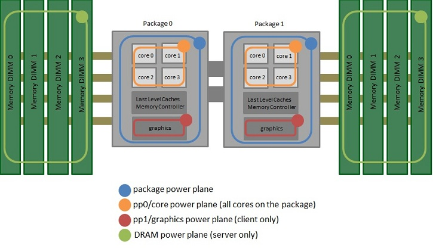

Energy measurements in Linux
Posted on Tue 31 January 2017 in Tech
RAPL
RAPL provides a set of counters providing energy and power consumption information. RAPL is not an analog power meter, but rather uses a software power model. This software power model estimates energy usage by using hardware performance counters and I/O models. Based on our measurements, they match actual power measurements.
- The processor has one or more packages. These are part of the actual processor that you buy from Intel. Client processors (e.g. Core i3/i5/i7) have one package. Server processors (e.g. Xeon) typically have two or more packages.
- Each package contains multiple cores.
- Each core typically has hyper-threading, which means it contains two logical CPUs.
- The part of the package outside the cores is called the uncore our system agent. It includes various components including the L3 cache, memory controller, and, for processors that have one, the integrated GPU.
- RAM is separate from the processor.

Recent (Sandy Bridge and later) Intel processors that implement the RAPL (Running Average Power Limit) interface that provides MSRs containing energy consumption estimates for up to four power planes or domains of a machine, as seen in the diagram above.
- PKG: The entire package.
- PP0: The cores.
- PP1: An uncore device, usually the GPU (not available on all processor models.)
- DRAM: main memory (not available on all processor models.)
The following relationship holds: PP0 + PP1 <= PKG. DRAM is independent of the other three domains.
Tools that can take RAPL readings include the following.
mozilla_rapl: all planes; Linux and Mac.Intel Power Gadget: PKG and PP0 planes; Windows, Mac and Linux.perf: all planes; Linux.turbostat: PKG, PP0 and PP1 planes; Linux.PAPI: read RAPL events
MSR
A model-specific register (MSR) is any of various control registers in the x86 instruction set used for debugging, program execution tracing, computer performance monitoring, and toggling certain CPU features.
https://lwn.net/Articles/545745/
https://01.org/blogs/2014/running-average-power-limit-%E2%80%93-rapl
https://developer.mozilla.org/en-US/docs/Mozilla/Performance/Power_profiling_overview
https://access.redhat.com/documentation/zh-CN/Red_Hat_Enterprise_Linux/7/html/Power_Management_Guide/Core_Infrastructure.html
mozilla_rapl
原先是firefox中的一个性能、功耗分析软件，我去除了与Linux无关的代码，添加了编译脚本，现在可以独立于firefox编译运行。
https://github.com/chih7/rapl
# chih @ archlinux in ~/PMU/firefox_power [18:08:31] C:1
$ sudo ./rapl
[sudo] password for chih:
total W = _pkg_ (cores + _gpu_ + other) + _ram_ W
#01 1.90 W = 1.45 ( 0.20 + 0.02 + 1.22) + 0.45 W
#02 1.77 W = 1.35 ( 0.11 + 0.03 + 1.21) + 0.42 W
#03 1.80 W = 1.39 ( 0.17 + 0.02 + 1.19) + 0.41 W
#04 1.87 W = 1.42 ( 0.17 + 0.02 + 1.23) + 0.45 W
#05 1.77 W = 1.36 ( 0.16 + 0.02 + 1.19) + 0.41 W
^C
13 samples taken over a period of 13.000 seconds
Distribution of 'total' values:
mean = 1.83 W
std dev = 0.04 W
0th percentile = 1.77 W (min)
5th percentile = 1.77 W
25th percentile = 1.78 W
50th percentile = 1.82 W
75th percentile = 1.86 W
95th percentile = 1.90 W
100th percentile = 1.90 W (max)
intel power gadget
$ sudo ./power_gadget -e 1000 -d 10
[sudo] password for chih:
RAPL not supported, or machine model 406e3 not recognized.
Init failed!
The power gadget doesn't support your CPU though: the RAPL initialisation code is table-driven, and it doesn't know about Skylake CPUs (or even Broadwell). It only knows about Sandy Bridge, Ivy Bridge and Haswell (and even then, not all Haswell CPUs)...
由于linux下的intel power gadget版本未及时更新，对于新cpu，比如我使用的Skylake架构的cpu，需要打一个补丁。
//chih
case 0x406e0: /* Skylake */
//end
case 0x40660: /* Haswell: 0x4066X (Tables 35:11,12,14,17,19) */
case 0x40650: /* Haswell: 0x4065X (Tables 35:11,12,14,17,18,19) */
case 0x306c0: /* Haswell: 0x306cX (Tables 35:11,12,14,17,19) */
case 0x306a0: /* IvyBridge client: 0x306aX (Tables 35:11,12,14) */
case 0x206a0: /* SandyBridge client: 0x206aX (Tables 35:11,12) */
# chih @ archlinux in ~/PMU/power_gadget [14:38:42]
$ sudo ./power_gadget -e 1000 -d 10
System Time,RDTSC,Elapsed Time (sec),IA Frequency_0 (MHz),Processor Power_0 (Watt),Cumulative Processor Energy_0 (Joules),Cumulative Processor Energy_0 (mWh),IA Power_0 (Watt),Cumulative IA Energy_0 (Joules),Cumulative IA Energy_0(mWh),GT Power_0 (Watt),Cumulative GT Energy_0 (Joules),Cumulative GT Energy_0(mWh)
......
Total Elapsed Time(sec)=10.0297
Total Processor Energy_0(Joules)=17.8525
Total Processor Energy_0(mWh)=4.9590
Average Processor Power_0(Watt)=1.7800
Total IA Energy_0(Joules)=3.7968
Total IA Energy_0(mWh)=1.0547
Average IA Power_0(Watt)=0.3786
Total GT Energy_0(Joules)=40348802750122148682202448929579954083587538418336263106019013328588433891916342955629569820500905624381003637605195948399507838978513675817091564240213448540197430240015810560.0000
Total GT Energy_0(mWh)=11208000763922819273654924813042885804926161178964146820669218906461918837197055882285886611228023711591975233705039549465180590407264871893995315391999381929938313125054906368.0000
Average GT Power_0(Watt)=4022936931619314615522564571277674057729988879436087598206455402730989779423177023450588030905067401122709863565105607495828398364105878169848967030480708805215802925837713408.0000
TSC=21411847472916
rapl-read
http://web.eece.maine.edu/~vweaver/projects/rapl/index.html
There are currently three ways to read RAPL results using the Linux kernel:
- Reading the files under
/sys/class/powercap/intel-rapl/intel-rapl:0using the powercap interface. This requires no special permissions, and was introduced in Linux 3.13 - Using the perf_event interface with Linux 3.14 or newer. This requires root or a paranoid less than 1 (as do all system wide measurements with -a)
sudo perf stat -a -e "power/energy-cores/" /bin/lsAvailable events can be found viaperf listor under/sys/bus/event_source/devices/power/events/ - Using raw-access to the underlying MSRs under
/dev/msr. This requires root.
Not that you cannot get readings for individual processes, the results are for the entire CPU socket.
# chih @ archlinux in ~/PMU/uarch-configure/rapl-read on git:master x [14:41:53]
$ ./rapl-read -s
RAPL read -- use -s for sysfs, -p for perf_event, -m for msr
Found Skylake Processor type
0 (0), 1 (0), 2 (0), 3 (0),
Detected 4 cores in 1 packages
Trying sysfs powercap interface to gather results
Sleeping 1 second
Package 0
package-0 : 1.606746J
core : 0.327941J
uncore : 0.040039J
dram : 0.481933J
# chih @ archlinux in ~/PMU/uarch-configure/rapl-read on git:master x [14:42:28] C:127
$ sudo ./rapl-read -p
RAPL read -- use -s for sysfs, -p for perf_event, -m for msr
Found Skylake Processor type
0 (0), 1 (0), 2 (0), 3 (0),
Detected 4 cores in 1 packages
Trying perf_event interface to gather results
Event=energy-cores Config=1 scale=2.32831e-10 units=Joules
Event=energy-gpu Config=4 scale=2.32831e-10 units=Joules
Event=energy-pkg Config=2 scale=2.32831e-10 units=Joules
Event=energy-ram Config=3 scale=2.32831e-10 units=Joules
Event=energy-psys Config=5 scale=2.32831e-10 units=Joules
Sleeping 1 second
Package 0:
energy-cores Energy Consumed: 0.364807 Joules
energy-gpu Energy Consumed: 0.079407 Joules
energy-pkg Energy Consumed: 1.690308 Joules
energy-ram Energy Consumed: 0.502747 Joules
energy-psys Energy Consumed: 5.918152 Joules
# chih @ archlinux in ~/PMU/uarch-configure/rapl-read on git:master x [14:43:02]
$ sudo ./rapl-read -m
RAPL read -- use -s for sysfs, -p for perf_event, -m for msr
Found Skylake Processor type
0 (0), 1 (0), 2 (0), 3 (0),
Detected 4 cores in 1 packages
Trying /dev/msr interface to gather results
Listing paramaters for package #0
Power units = 0.125W
CPU Energy units = 0.00006104J
DRAM Energy units = 0.00006104J
Time units = 0.00097656s
Package thermal spec: 15.000W
Package minimum power: 0.000W
Package maximum power: 0.000W
Package maximum time window: 0.000000s
Package power limits are unlocked
Package power limit #1: 25.000W for 0.107422s (enabled, clamped)
Package power limit #2: 25.000W for 0.032227s (enabled, not_clamped)
Sleeping 1 second
Package 0:
Package energy: 1.657654J
PowerPlane0 (cores): 0.353638J
Note: the energy measurements can overflow in 60s or so
so try to sample the counters more often than that.
rapl_basic
# chih @ archlinux in ~/PMU/papi-5.5.1/src [21:38:11]
$ ./configure --with-components=rapl && make # compile papi
# chih @ archlinux in ~/PMU/papi-5.5.1/src/components/rapl/tests [21:39:09]
$ sudo ./rapl_basic
Trying all RAPL events
Found rapl component at cid 2
Starting measurements...
Sleeping 1 second...
Stopping measurements, took 1.000s, gathering results...
Scaled energy measurements:
rapl:::PACKAGE_ENERGY:PACKAGE0 1.150513 J (Average Power 1.2W)
rapl:::DRAM_ENERGY:PACKAGE0 0.640137 J (Average Power 0.6W)
rapl:::PP0_ENERGY:PACKAGE0 0.379883 J (Average Power 0.4W)
Energy measurement counts:
rapl:::PACKAGE_ENERGY_CNT:PACKAGE0 18850 0x0049a2
rapl:::DRAM_ENERGY_CNT:PACKAGE0 10488 0x0028f8
rapl:::PP0_ENERGY_CNT:PACKAGE0 6223 0x00184f
Scaled Fixed values:
rapl:::THERMAL_SPEC:PACKAGE0 15.000 W
rapl:::MINIMUM_POWER:PACKAGE0 0.000 W
rapl:::MAXIMUM_POWER:PACKAGE0 0.000 W
rapl:::MAXIMUM_TIME_WINDOW:PACKAGE0 0.000 s
Fixed value counts:
rapl:::THERMAL_SPEC_CNT:PACKAGE0 120 0x000078
rapl:::MINIMUM_POWER_CNT:PACKAGE0 0 00000000
rapl:::MAXIMUM_POWER_CNT:PACKAGE0 0 00000000
rapl:::MAXIMUM_TIME_WINDOW_CNT:PACKAGE0 0 00000000
rapl_basic.c PASSED